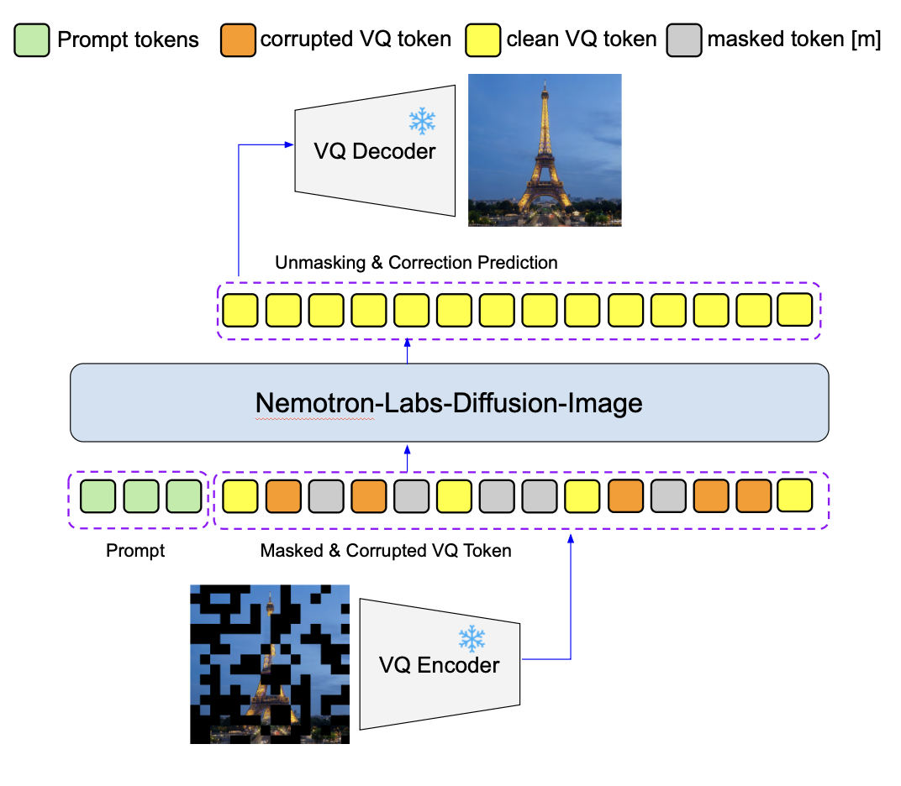
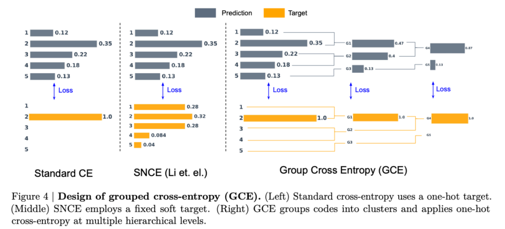
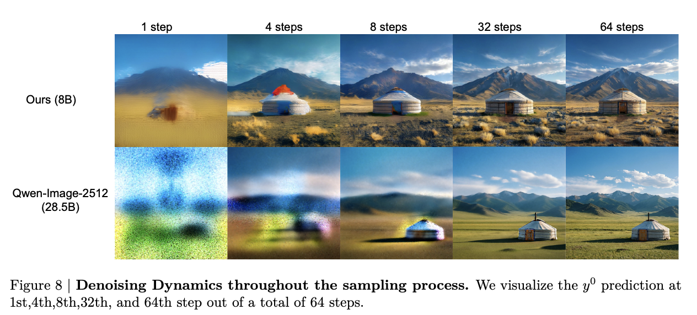
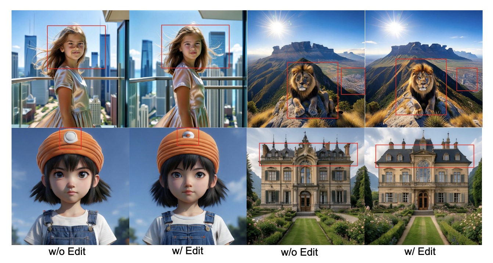
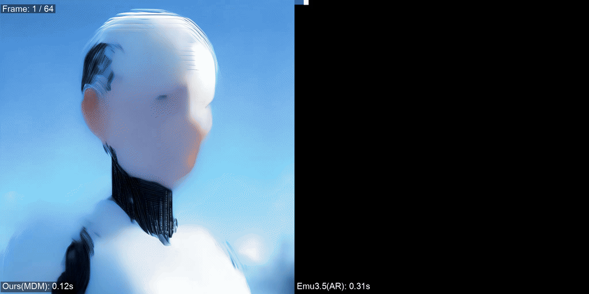
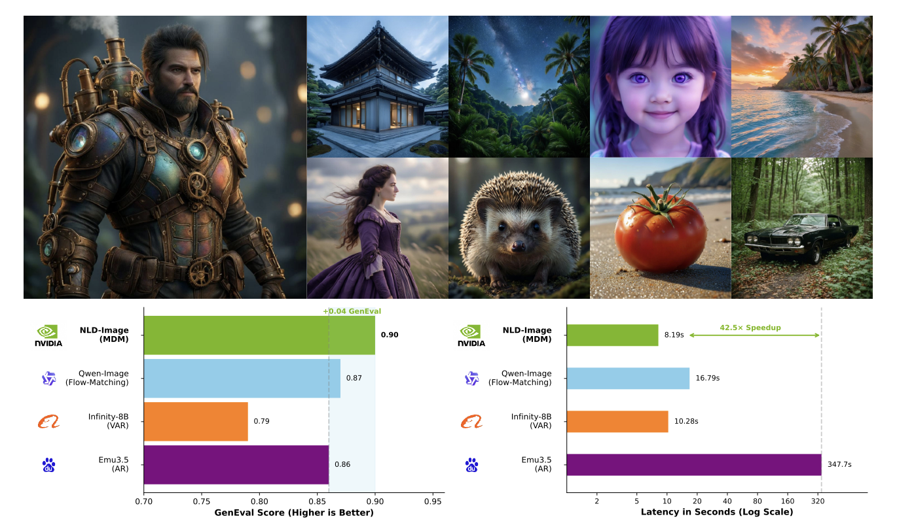

We present NL-Diffusion-Image, a text-to-image generation model that advances masked discrete diffusion for high-resolution image synthesis. Unlike continuous diffusion models that operate in latent space, NL-Diffusion-Image treats image generation as iterative unmasking of discrete visual tokens, enabling parallel bidirectional decoding throughout the denoising process. We introduce an improved training objective — the Grouped Cross-Entropy (GCE) objective — which alleviates per-token signal sparsity in large-vocabulary settings by assigning positive learning credit to tokens neighboring the ground truth in embedding space. Our model also incorporates a token-editing mechanism that enables the model to dynamically revise already-unmasked tokens during inference, addressing the lack of self-correction in standard masked diffusion models, and supports flexible few-step generation with controllable speed-quality tradeoffs. Extensive benchmarks demonstrate that NL-Diffusion-Image achieves state-of-the-art performance among discrete diffusion models while remaining highly competitive with leading continuous diffusion approaches.

NL-Diffusion-Image adopts a Transformer-based architecture operating on discrete visual token sequences. An image is encoded into a grid of discrete tokens using a VQ-based tokenizer. The masked diffusion model then learns to predict the clean tokens from a corrupted (partially masked) sequence, conditioned on the text prompt via cross-attention. During inference, the model iteratively unmaskes tokens in parallel over multiple diffusion steps, progressing from a fully masked sequence to a complete image.

A key contribution of this work is the Grouped Cross-Entropy (GCE) objective, which addresses a fundamental challenge in discrete diffusion: as tokenizer vocabulary size grows, the per-token training signal becomes increasingly sparse. GCE alleviates this by assigning positive learning credit to tokens that neighbor the ground truth in embedding space, providing richer gradient signal and leading to substantially improved generation quality without increasing training cost.

NL-Diffusion-Image supports flexible few-step generation, allowing users to trade quality for speed by reducing the number of denoising steps. Even with as few as 8 steps, the model produces highly coherent and visually appealing images, while 64 steps yield the best quality. This flexibility makes the model practical for a range of latency-sensitive applications.

A known limitation of standard masked diffusion is that discrete tokens cannot be modified once they are unmasked, removing any self-correcting capability. NL-Diffusion-Image addresses this with a token-editing mechanism that enables the model to dynamically revise already-unmasked tokens during inference — similar to how a sculptor iteratively refines their work — resulting in more coherent and higher-fidelity outputs.

Compared to autoregressive and continuous diffusion baselines, NL-Diffusion-Image achieves significantly faster wall-clock generation time thanks to its parallel unmasking strategy. The model generates all image tokens simultaneously at each step rather than sequentially, resulting in sub-second generation at 256×256 resolution and competitive throughput at 1024×1024 on modern hardware.

We evaluate NL-Diffusion-Image on standard text-to-image benchmarks including GenEval and MJHQ. Our model achieves state-of-the-art performance among discrete diffusion approaches and remains competitive with leading continuous diffusion models, demonstrating that masked discrete diffusion is a viable and efficient paradigm for high-resolution image synthesis.
@article{li2026nemotron,
title = {Nemotron-Labs-Diffusion-Image: Advancing Masked Discrete Diffusion
for High-Resolution Image Synthesis},
author = {Li, Shufan and Heinrich, Greg and Ye, Hanrong and Fu, Yonggan and
Grover, Aditya and Kautz, Jan and Molchanov, Pavlo},
journal = {arXiv preprint arXiv:2606.29814},
year = {2026}
}